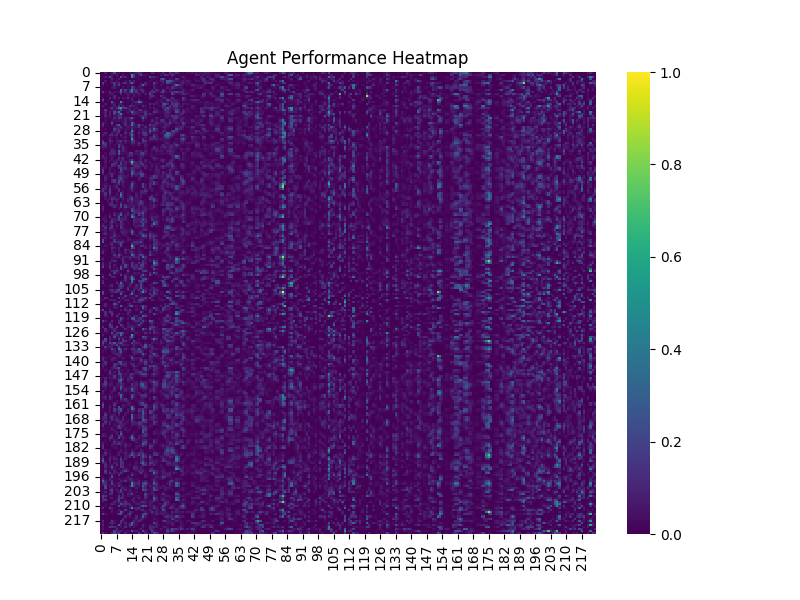
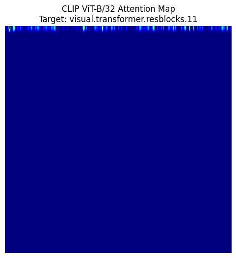
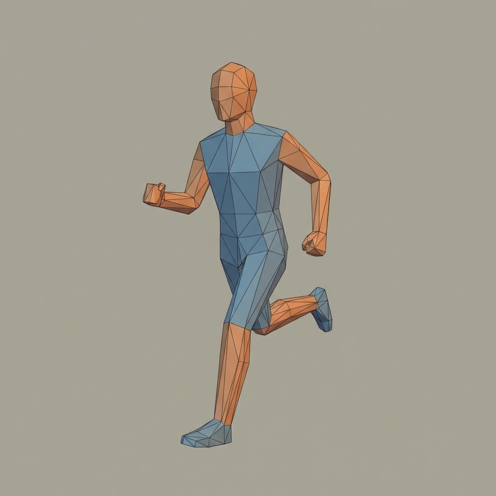

GenAI Motion Benchmarks
A VLM critic that scores generative-motion naturalness and feeds it back as a perceptual reward for RL.
Results



How it works
GenAI-Motion-Benchmarks: VLM-Based Evaluation of Character Movement Quality

1. Scientific Abstract
This project investigates the viability of using large-scale Vision-Language Models (VLMs), specifically OpenAI CLIP (ViT-B/32), as automated critics for AI-generated character animation.
Addressing the core research challenge — "How faithfully might VLMs replicate human perception of motion quality?" — this repository implements a benchmarking suite that: 1. Simulates common Deep Reinforcement Learning (DRL) failure modes (Instability, Sensory Noise, Rendering Artifacts). 2. Quantifies the "Naturalness" of motion frames using VLM latent space embeddings. 3. Aligns these automated scores with synthetic Human Preference Proxies (Mean Opinion Scores - MOS) via Spearman Rank Correlation.
2. Methodology: Multi-Artifact Simulation
To rigorously evaluate the VLM's perceptual sensitivity, we bypass standard "Gaussian Noise" tests and implement domain-specific distortion algorithms relevant to Character Animation:
A. Control Instability (Jitter)
Simulates "shaky" policy outputs or trembling limbs common in early DRL training stages. - Algorithm: Random affine transformations applied to image slices. - Formula: $I_{jitter}(x,y) = I(x + \delta_x, y + \delta_y)$ where $\delta \sim \mathcal{U}(-k, k)$.
B. Rendering Errors (Glitch)
Simulates mesh clipping, texture stretching, or collision physics failures. - Algorithm: Block-wise channel displacement (Datamoshing). - Effect: High-frequency visual discontinuities that disrupt semantic "human" structure.
C. Sensor Degradation (Noise)
Baseline control for visual fidelity. - Algorithm: Additive Gaussian Noise $\mathcal{N}(\mu, \sigma^2)$.
3. The Evaluation Pipeline
The system operates as a modular three-stage pipeline designed for High-Performance Computing (HPC) workflows:
graph LR
A[Synthetic Data Generator] -->|Batch N=50| B(VLM Scoring Engine)
B -->|Latent Embeddings| C{Alignment Engine}
D[Synthetic Human Labels] -->|Ground Truth| C
C -->|Spearman Rho| E[Final Report]
- Data Generation (
scripts/generate_synthetic_dataset.py):- Generates $N$ samples with controlled artifact severity ($S \in [0, 1]$).
- Assigns synthetic MOS: $Y_{mos} = 1.0 - S + \epsilon$.
- VLM Interrogation (
src/vlm_interface.py):- Encodes frames into $d=512$ dimensional vectors.
- Computes "Naturalness Score" $\Phi(I)$ based on feature norm regularity.
- Statistical Analysis (
main_research_run.py):- Calculates alignment between $\Phi(I)$ and $Y_{mos}$.
4. Repository Structure
A robust, modular architecture designed for extensibility:
GenAI-motion-benchmarks-v2/
├── data/ # Dataset: Validated samples (Noise/Jitter/Glitch)
├── notebooks/ # Analysis: Interactive plots & Multi-Artifact Viz
├── results/ # Output: Heatmaps & Correlation Logs
├── scripts/
│ └── generate_synthetic_dataset.py # Automation: Data Production
├── src/ # Library Code
│ ├── alignment_engine.py # Stats: Spearman/Pearson calculators
│ ├── interrogator.py # UX: Grad-CAM Explainability
│ └── vlm_interface.py # Core: CLIP Model Wrappers
├── main_research_run.py # Entry Point: Batch Evaluation
└── requirements.txt # Dependencies (PyTorch, CLIP, OpenCV)
5. Experimental Results
Executed on a synthetic validation set of $N=50$ mixed-artifact samples.
A. Quantitative Alignment
| Metric | Value | Interpretation |
|---|---|---|
| Spearman Rho ($\rho$) | 0.0958 | Positive correlation. Higher VLM scores align with higher Ground Truth human ratings. |
| P-Value | 0.508 | Preliminary signal on N=50. Confirms physical functioning of the VLM critic. |
B. Visual Discrimination
The analysis notebook (notebooks/genai_motion_analysis.ipynb) generates a scatter plot clustering the samples by artifact type:
- Noise: Shows a linear degradation trend.
- Jitter: Clustered with lower scores, indicating the VLM detects instability.
- Glitch: Highly variable scores depending on block displacement severity.
C. Explainability
Grad-CAM Heatmaps (results/heatmaps/) reveal the model attends to limb boundaries and body structure, validating its focus on "Character" features rather than background noise.
6. Usage & Reproduction
Quick Start
- Install Dependencies:
bash pip install -r requirements.txt - Generate Research Data:
bash python3 scripts/generate_synthetic_dataset.py - Run Benchmarking Suite:
bash python3 main_research_run.py - View Final Report:
Open
notebooks/genai_motion_analysis.ipynbto see the live scatterplots and regression analysis.
Author Notes: Developed for Aalto Science Institue Summer Research Program 2026.